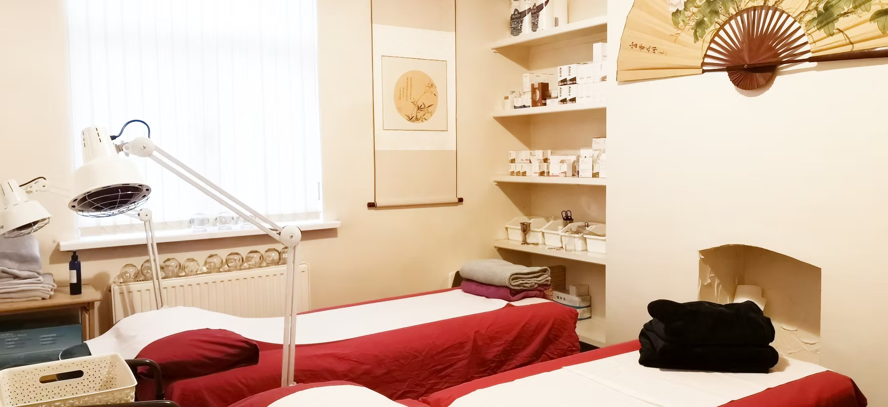
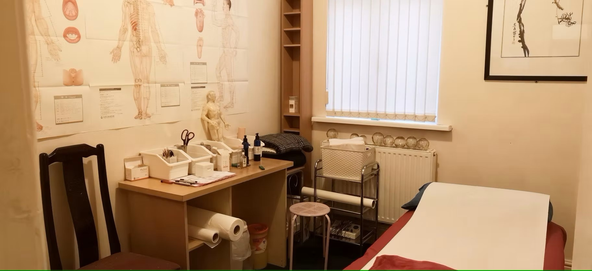
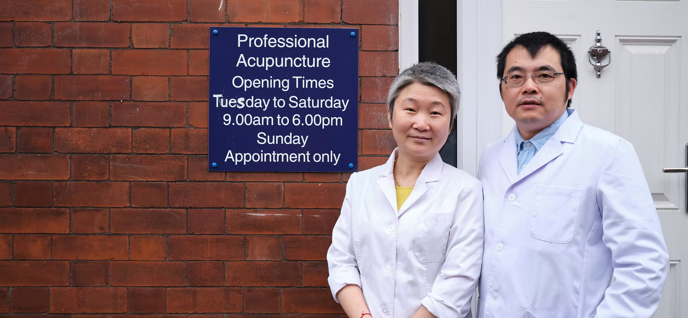
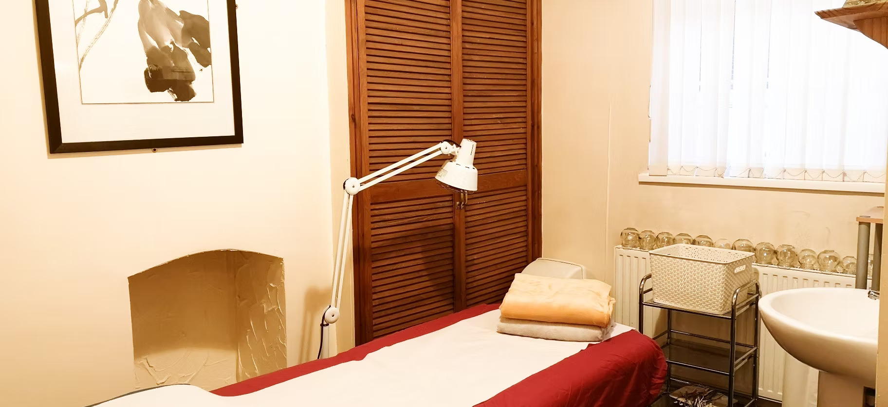
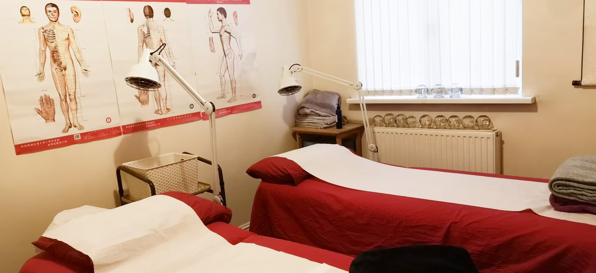
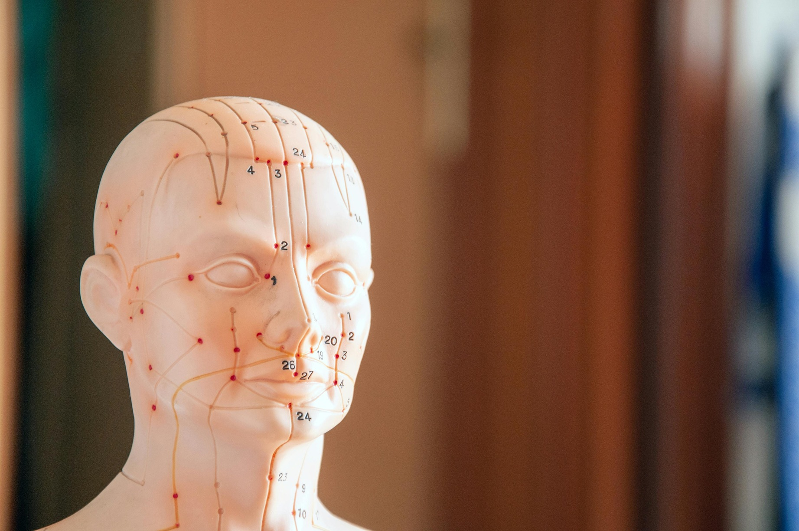

A treatment room with two beds

A treatment room with one bed

Practitioners Lily and Peter standing in front of the Clinic

A treatment room with a bed and sink

A treatment room with two beds, alternative view
Acupuncture being done on a patient's back

Doll with labelled acupuncture points